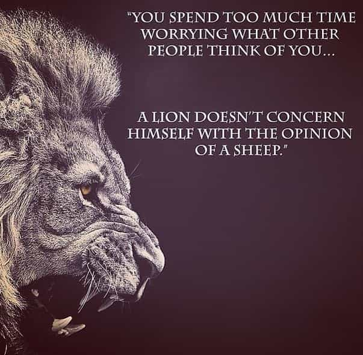

Robert Smith is the mind behind Cinema Tyrant. He has great interest in strong male character movies. He invites you to read his master article about good movies on netflix.


Do you know why Game of Thrones has become the most popular TV show? No doubt you have thought about it at one point or another. Story, characters, cinematography, acting etc are vital things. But, two key points are:
1. We all love it because we can relate to at least one of the characters.
2. Men are respected in the show.
Recently, I have started re-watching it from the season one, before it became overtly feminist. It is full of strong and capable characters. We men can learn many things from them.
Here are the 27 lines of GOT Season 1 that are masculine. Every man has something to learn from these lines. Some of these quotes resonated well with me and I know some of them will resonate well with you too.
Ned Stark, being a king himself, followed this rule. He could easily order someone else to kill the deserter from the Night’s Watch. But he vowed to kill them himself and so he did.
A man should respect his words and once a word is given, he must do everything to keep his words. Mean what you say and say what you mean.
Tyrion knew that he is a shitty fighter, so he tried to outsmart everyone by his mind. He accepted that he is not good at violence and became good at convincing others to do violence for him.
Accept who you are. Comply with your nature. Find and multiply your strengths. Do what you are good at.
Well said. Ned never made anything clear to his enemies about what he is up to. He knew Lannisters were Murderers of Jon Arryn but he never made it clear about what he is doing to expose them.
Not showing all your cards and talents can give certain advantage in the world of competition. Never brag what you can do. Do it when time is right.
Being a good father, Ned Stark wanted to teach his sons how to be a man, hard man. He killed the deserter, showed them live death and even told Bran why he had to kill the deserter.
In our world, it can be translated as: You won’t live here forever. And, death is coming.
Find your mission/passion and fulfil it. Take charge of your life and do wonderful things.
As already said, Tyrion being a dwarf was not good at fighting. So what did he do about it? He learnt to convince others to do violence for him.
How did he do it? By reading books and keeping his mind sharp. His wittiness might be attributed to it.
In our world, there is a wise line: “The more you learn the more you earn.”
Another good one is: “What you know makes you money and what you don’t know loses you money.”
Keep learning new things. Books are your best friends. Read real life stories and autobiographies, these are the books that are worth reading.

This line can be viewed in two lights. First: The first punch of your life (either you threw or got 😉 ), the first one-on-one fight and the first time you kill an animal; you will remember them forever.
Second: Never let ego control you because you’re nothing but sacks of meat and blood, and some bone to keep it all standing.
Lannisters had taken this quote seriously and this is how they were able to keep the name of their house perceived as powerful.
From cavemen days to today, this line holds true. In those days people from different tribes were considered enemy unless they had friendly terms already.
In today’s world, we can say it like this:
You have different goals than everyone else and they have different goals than you. You are not interested in what they want and they are not interested in what you want.
All everyone else are interested in is how you can help them achieve their own personal goals. No one cares what you want, what your goals are.
Help them achieve their goals and they will help you achieve your goals. That is how you build friendships, by providing each other value.
Though Cersei Lannister said it, but Jaime Lannister acted on this line well. He served the Mad King well when serving was safe. And when it was not safe he killed the King.
Arguing when it is waste of time is bad and not arguing when the situation calls for it is also bad. Learn when to argue and when not to. Same applies with fighting, asking a girl out etc.
Also you don’t have to fight and win every fight. No one has ever won all the fights. Only win those fights that are important and worth fighting.
John Snow considered himself a ranger. He wanted to go with Benjen Stark when he was leaving. He considered himself better than others, he saw himself entitled to be a ranger.
Benjen said this line and left him. So, don’t expect to get anything from anyone. You only get what you earn. Stop the entitlement mentality.
Many people think that they deserve better, so someone should give money, cloths, cars, girls etc. to them. But being a man you must know that: First you earn it then you get it.
Daenerys had tolerated her brother for a long time. Initially, she was not self-confident enough to confront him. Now as a Khaleesi, she know where his brother’s limits are.
Draw clear limits of what behavior you will accept and what you will not. Don’t tolerate misbehavior from anyone, whether it a Miss World or your dog.

On one side there were men who fought with dragons and killed them. On other side there were men who used those dragons to win victories.
This line is true both ways. You are brave when you kill a lion and you are also brave when you can control it and get it to do what you want.
Dothraki were brave men, they had men and horses. All they lacked mainly was discipline.
Discipline is what great men have. From the earlier days of evolution to today, disciplined men are the leaders. They do what needs to be done regardless of how they feel about it.
Men with great body go to gym even when they don’t feel like going. Great actors spend hours in front of mirrors perfecting their facial expressions every day.
Great warriors practice their art every day to keep up with other warriors. Great singers sing for hours, Great writers write several thousand minimum words a day.
Discipline is the price of success. Take it or leave it, is up to you.
Robert, having been a successful rebel, knew this thing more than Cersei. Unity is what made Robert the king and the Mad king dead.
All your efforts directed in one direction will earn far more results than your efforts directed in different directions.
Many entrepreneurs have repeatedly said this: build one business rather than building 12 businesses at once. Master one formula first and then move on next.
Very true line. These words are what keep giving you hope to survive. Every men should learn them. Syrio, being a sword teacher, taught this to every aspiring warrior.
In our world we can interpret it like this: Every time you want to give up on something, just say “Not today”.

Having watched 6 seasons, I can safely say one thing: In Game of Thrones anyone can die. It is not like those TV shows where the lead characters survive anyway. And, Cersei said it well.
Yet, our real world is not this way. Failure at one thing does not mean failure at other things. You can always try again and start fresh. See the beauty of it?
You won’t die until you give up. A wise line: Fall 7 times and get up 8 times.
Littlefinger learnt this the hard way. He challenged Ned Stark’s brother and was beaten in it. Now he carries a token of this stupidity.
This is what he learnt: Find a game where you can win and commit your life playing that game. That is how you win.
He did not know a lot about fighting, but he did knew enough about politics. And, he has survived by far in the show.
Robert rebelled against the Mad King and won, this was called a victory not a treason. It might have been called a treason had he lost the war. Greyjoys rebelled against Robert but lost, this was called a treason.
In our world, we can look at it like this:
Eddard Stark: What you suggest is a stupid business idea.
Petyr ‘Littlefinger’ Baelish: Only if we don’t make money.
Your business idea is stupid only if it does not make money. Do the stupidest things if need be, that is what innovation seems to us at first.
Tywin Lannister is the richest men in the seven kingdoms. His mindsets are fantastic and this line is burning example. All he wants is his family name to be perceived as powerful. He does this by anyway needed and he don’t care what others think of him.
Never care what other people think of you. Do whatever you want whenever you want. There will always be people who will be jealous, want to hold you back, conspire against you and say negative things about you.
You remove one person from it, there will always be another person to replace him. So, don’t concern yourself with the opinions of other people.

This is again a fantastic mindset of Tywin. He knew his priorities well. Whatever he did, he did not do it for his personal benefits, but for family benefits.
For example, these two quotes saved Tyrion’s life many times.
It all was possible because of the family name he had. Tywin did well to maintain his family name. He had a bigger picture of the world in his mind.
Have a bigger picture of things in mind, think bigger than your personal glories. Be loyal to your family and your country. They are the ones who will support you in your bad times.
Even in cavemen days, a man had to become loyal to his tribe in order to survive. A wise quote:
“Don’t ever take side with anyone against the family…ever.” – The Godfather (movie)
This is a brilliant example of Tyrion’s wittiness. He keeps his mood fun. He does not lose his cool, he does not get angry. Instead of begging Shagga for his life, he showed him how he can help his tribe achieve The Vale of Arryn.
However bad a situation is, don’t lose your cool. Keep calm. This is what we call a tough man, he faces every situation you throw at him on his feet.
It was hard for Robb to decide to start a war against the Lannisters and the King. His hands were shaking heavily. But he decided to do it anyway. It was a question of rescuing his father.
Some decisions are hard to make. Make them anyway, don’t care whatever you feel or what might happen. A good quote:
“If you’re scared to do something, that’s a good sign that you should do it.”
Brave words said by Ned. He asked to die like a man, bravely. He knew he did the right thing and if that means death, then so be it.
Be ready to die for something you believe in. Be ready to give your 100% for a business idea you believe in. You might lose money if you fail, but you will know you did right. And the lessons you learn will make you wise.
Ned Stark respected his honor more than his life. He didn’t want to be called a traitor and live. He wanted to be called an honorable man and die.
It takes lifetime of work and consistent efforts to earn honor, money, love and glory. Don’t lose it for some wrong cause.
The one thing that the men at Castle Black have is they have a mission. Their individual purposes don’t matter. Together they have a purpose of protecting everyone from the wildlings and white walkers. Duty is all that matters to them.
Many soldiers sacrifice their lives for the honor of country. They have a purpose to live for and die for.
Find your mission in the life same as the men of night’s watch. Die for your country and family, if needed. Help your family and friends find their own missions.
If they lose their path and want to give up on their mission, guide them to right path. Motivate them!
Robb knew that fighting, with the rules that Jaime Lannister is good at, will result in Jaime’s winning. That is why Jaime was demanding to fight that way in the first place.
You don’t have to follow all the rules all the times. Real man invent their own rules, after learning from the old ones.
There is a rule of the universe: People who follow all the rules never get what they want. People that break all the rules get everything they want and more.

Joffrey, in the heat of the moment, talked about killing Robb Stark. But Sansa knew her brother well and did not underestimate him. She knew that in the battle Robb might defeat Joffrey.
Never underestimate yourself from your competition. Your methods and the way you work may be better than your competitors. Just keep improving, making your products and services better.
Lord Commander Mormont had a bigger picture of the world in his mind. He knew that the real problem is White walkers not Lannisters or the King.
Don’t worry about small things, there are far bigger things to worry about. Don’t worry too much about the broken glass window in your office, rather worry about keeping your customers happy.
That is worth worrying and will grow your business. Have a bigger picture in mind.
These are great lines. There are many things to learn from these lines and the characters who said them.
And, I want you to do one thing: These 27 quotes have 27 messages/philosophies in them. Practice these philosophies every day one by one.
Like, for one day you could practice keeping your words. Another day you might decide not to give up on anything. Another day you might practice keeping your cool and not getting angry at all.
It will make you more of a man and you will be able to think past your emotions. And, that is great. Men are born to be logical, fight, lead, build, jump and run. I hope you enjoyed my compilation.
Read More: Who Is The Biggest Alpha Male On Game Of Thrones?